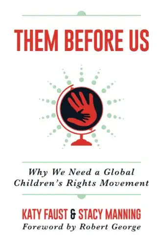

Recently, I shared about a locally advertised drag-queen event that ultimately was canceled , but had been advertised for children, additionally mentioning how a local dance company had incorporated a drag-queen number into its recital featuring kids.
After that piece ran, a local drag queen, whose name I hadn’t used or even known, tried reaching out through social media, challenging, “Why’d you come after me?” Since the question seemed more accusation than authentic inquiry, I didn’t feel the need to engage, but perhaps it will serve a greater purpose here.
For clarity, I wasn’t taking issue with men who dress as women, put on makeup, and bring their alter persona into adult spaces, but with exposing children to it.
More and more, we adults are putting children’s needs behind our own desires; and not just through these ever-ubiquitous drag-queen story hours. If this continues, civilization won’t survive. God created the world in orderly fashion, and going against that order will bring long-term ruin.
Katy Faust has been repeating the right order of things, including through her book, “Them Before Us: Why We Need a Global Children’s Rights Movement.” I’ve been paying close attention to Faust because I believe her proposition key to humanity’s survival.

In her article for The American Mind, “This is a Child,” Faust says, “A just society does not force the weak to sacrifice for the strong.” Our modern world has failed to recognize this truth.
I recently shared a meme on Facebook showing a little girl in her father’s embrace, with the words, “Children must never work for our love; they must rest in it.” We have put way too much on the shoulders of our children, and it needs to end, and soon.
That is why I shared about the drag-queen event. Not to “come after” anyone, but to urgently say, “Enough! Can we not think of the children and what this might be doing to their psyches?” Why would we ever believe exposing children to sexually advanced ideas they are not equipped to process, either in brain or body, could be good for them?
We are a wounded society, and I realize many of the adults pushing children into their adult world need healing themselves. But that’s a separate issue, and we need to start seeing the difference.
We cannot drag our children through our mud while we’re trying to figure out our own lives. We must begin to put their needs and rights ahead of ours. Children are our future and hope, and deserve to be guarded in every possible realm and way.
In Matthew 19:14 of Scripture, Jesus says, “Let the little children come to me, and do not hinder them, for the kingdom of heaven belongs to such as these.” If God holds the child in such high regard—indeed, even as essential to entry into eternal life—it seems we should be doing everything possible to foster that innocence, in both ourselves and in every child who comes into this world.
[For the sake of having a repository for my newspaper columns and articles, I reprint them here, with permission, a week after their run date. The preceding ran in The Forum newspaper on Nov. 7, 2022.]